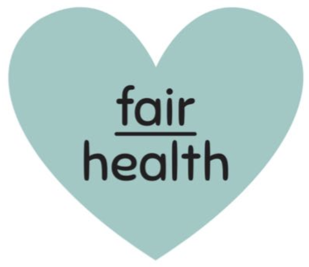

Antes do atestado, tem uma pessoa.
Por que a fairhealth existe.
@fairhealth.br
2/9
Tem uma noite mal dormida. Um cansaço que não passa. Uma dor que foi ficando.
@fairhealth.br
3/9
Tem alguém tentando dar conta de tudo, sem tempo de se cuidar.
@fairhealth.br
4/9
Marcar consulta, se deslocar, perder meio dia de trabalho...
e o cuidado vai ficando para depois.
@fairhealth.br
5/9
Quando chega ao RH, já virou atestado, afastamento, sinistro.
A história começou muito antes.
@fairhealth.br
6/9
Por isso a gente vai até lá.
Médicos, psicólogos e assistentes sociais dentro da empresa, perto de quem precisa.
@fairhealth.br
7/9
Cuidamos de pessoas. E mostramos ao RH o que mudou.
Com relatórios anonimizados. O que é conversado no atendimento, fica no atendimento.
@fairhealth.br
8/9
Em poucas palavras
- 1Antes do atestado, tem uma pessoa.
- 2O cuidado precisa estar perto.
- 3Por isso levamos o cuidado para dentro.
- 4E mostramos, com dados, o que mudou.
@fairhealth.br
9/9

Prazer, somos a fairhealth.
Siga @fairhealth.br e acompanhe como cuidamos de quem faz a sua empresa acontecer.
Com cuidado, equipe fairhealth
Cuidar das pessoas antes que o adoecimento vire afastamento.
E mostrar, com dados, o que mudou.
Cuidar tem jeito.
O nosso tem quatro passos. E começa escutando.
→
@fairhealth.br
2/8
Programa de saúde que ninguém usa não é cuidado.
É evento. A gente acredita no contrário: cuidado que faz parte da rotina.
@fairhealth.br
3/8
01
Medir
Conhecer a pessoa antes de orientar.
Rotina, sono, estresse e hábitos, com anamnese, bioimpedância e smartband.
@fairhealth.br
4/8
02
Cuidar
Um plano feito para ela, não um protocolo.
Atendimento médico, psicológico e social, com base na Medicina do Estilo de Vida.
@fairhealth.br
5/8
03
Conscientizar
Explicar o porquê, para o hábito ficar.
Mudança que faz sentido para a pessoa dura mais do que qualquer regra.
@fairhealth.br
6/8
04
Comprovar
Mostrar ao RH o que mudou.
Adesão, retorno e evolução do grupo, em relatórios anonimizados.
@fairhealth.br
7/8
Quatro passos, perto de quem precisa
- Medirconhecer antes de orientar.
- Cuidarum plano para cada pessoa.
- Conscientizaro porquê, para o hábito ficar.
- Comprovarmostrar o que mudou.
@fairhealth.br
8/8
Salve e mande para quem cuida das pessoas na sua empresa.
@fairhealth.br